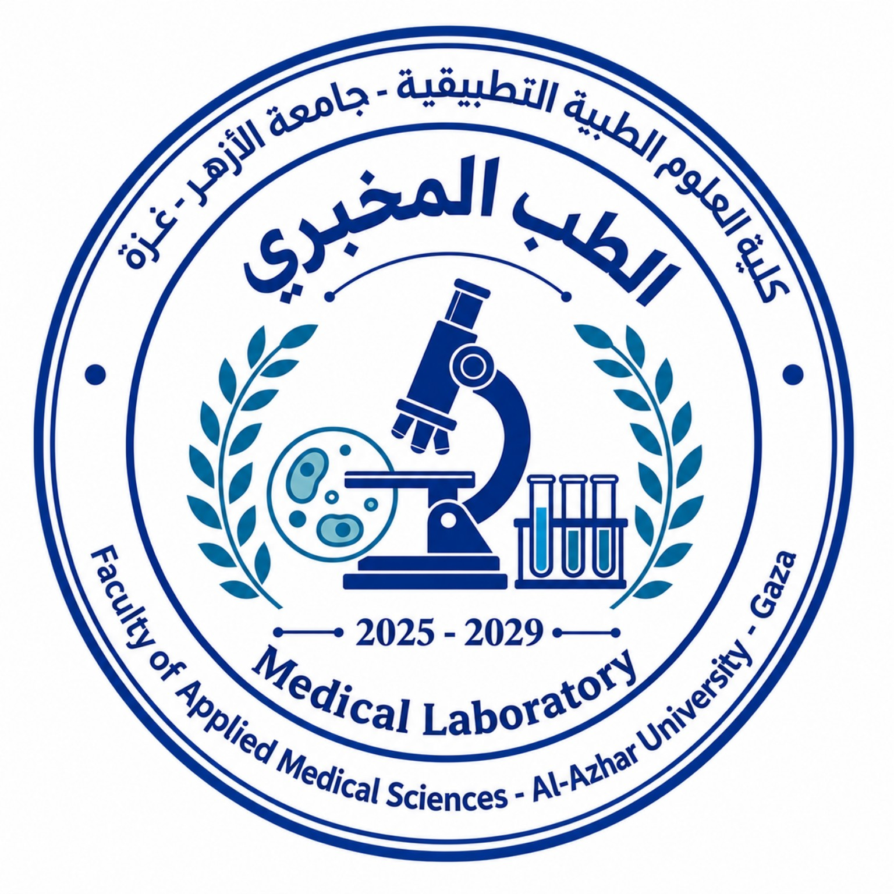
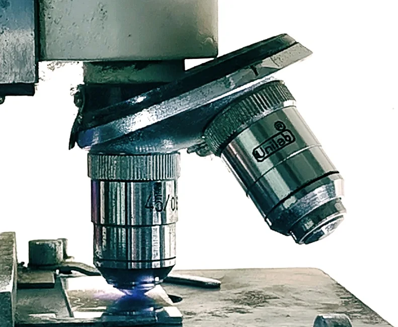

01محاضرات المساق
قياسات ضوئية
المطياف الضوئي
Spectrophotometer

دفعة الطبّ المخبري · 2025–2029
وهو مختبر أُنشئ لطلبة التخصص.
نسأل الله لكم التوفيق والنجاح في رحلتكم العلمية والمهنية.
MuhamedM
من طلبة الطبّ المخبري إلى طلبة كلية العلوم الطبية التطبيقية وجامعة الأزهر – غزة

Spectrophotometer
Microscope
Electrolyte Analyzer
CBC Analyzer
Centrifuge
Chromatography